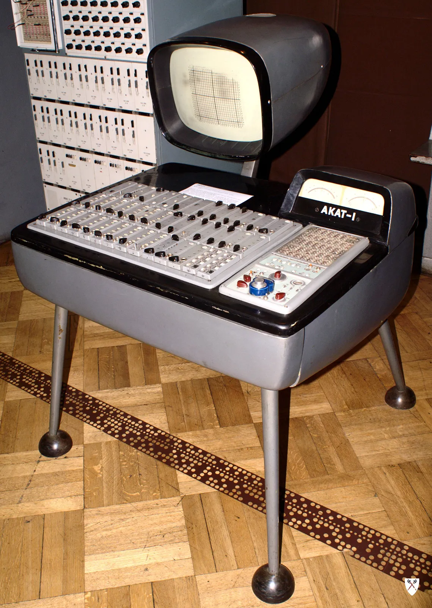
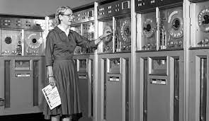
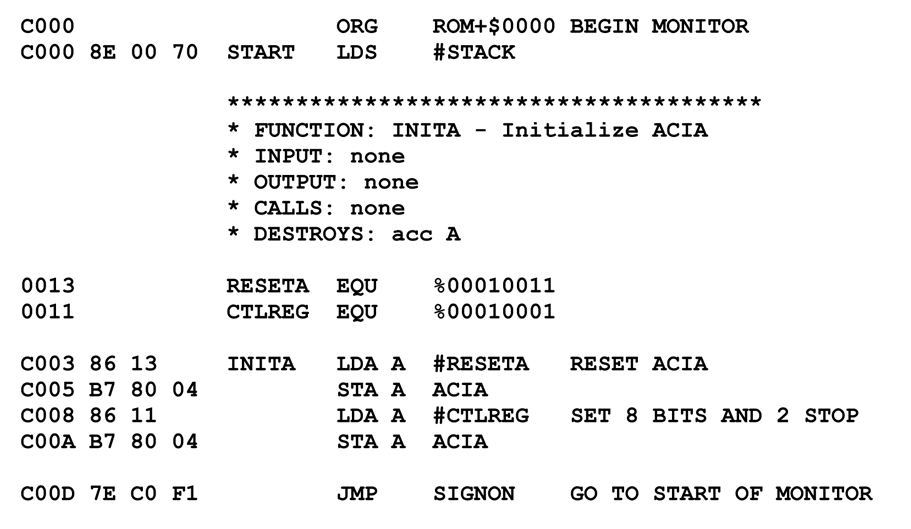
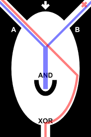

Leibniz may have been the first computer scientist and information theorist. Early in life, he documented the binary numeral system (base 2), then revisited that system throughout his career.
An analog computer or analogue computer is a type of computer that uses the continuous variation aspect of physical phenomena such as electrical, mechanical, or hydraulic quantities to model the problem being solved.
Ada lovelace wrote down the first algorithm that was meant for a computer. First programmer.
Grace Brewster Murray Hopper was a computer pioneer and naval officer. She received a master’s degree (1930) and a Ph.D. (1934) in mathematics from Yale. One of the first three modern “programmers,” Hopper is best known for her trailblazing contributions to the development of computer languages. She Discovered the first computer bug and coined the word "debugging".
In computer programming, assembly language (or assembler language,[1] or symbolic machine code[2][3][4]), often referred to simply as Assembly and commonly abbreviated as ASM or asm, is any low-level programming language with a very strong correspondence between the instructions in the language and the architecture's machine code instructions.
Nature tends to prefer quaternary computations, we use binary. binary doesn't convert well to other bases.
Fluidics, or fluidic logic, is the use of a fluid to perform analog or digital operations similar to those performed with electronics.The physical basis of fluidics is pneumatics and hydraulics, based on the theoretical foundation of fluid dynamics.
Biologic computers they used leach neurons to make a computer
Machine learning is a branch of artificial intelligence (AI) and computer science which focuses on the use of data and algorithms to imitate the way that humans learn, gradually improving its accuracy.